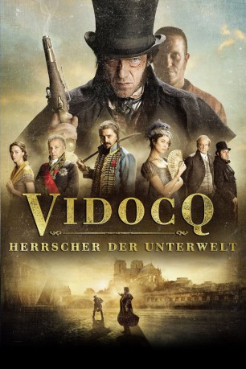

#11161 Vidocq - Herrscher der Unterwelt
Alternativ: The Emperor of Paris (Englischer Titel)
 
 IMDB-Wertung: 6.3 / 10
IMDB-Wertung: 6.3 / 10  Metascore: 0
Metascore: 0 
Paris, 1811: Nach seinem letzten spektakulären Gefängnisausbruch versucht François Vidocq, unerkannt ein ruhiges Leben zu führen. Seine kriminelle Vergangenheit holt ihn allerdings schnell ein. Enttarnt und fälschlicherweise wegen Mordes angeklagt, entschließt er sich, im Gegenzug für seine Freiheit auf Verbrecherjagd zu gehen. Diese Entscheidung bringt nicht nur die gesamte Unterwelt gegen ihn auf, sondern ruft einen gefährlichen alten Bekannten auf den Plan, der mit Vidocqs Hilfe über Paris herrschen möchte
Jahr: 2018
Dauer: 120 Minuten
FSK: 16
Land: Frankreich Studio: Splendid FilmTonspuren: DTS - ,
Untertitel: Deutsch,
Auflösung: 1080p (1920x800) Größe: 11878 MB
Genre: Abenteuer, Geschichte
Regisseur: Jean-François Richet
Drehbuch: Éric Besnard, Éric Besnard, Éric Besnard, Jean-François Richet, Jean-François Richet
Soundtrack: Marco Beltrami, Marcus Trumpp
Darsteller:
 Olga Kurylenko als La Baronne
Olga Kurylenko als La Baronne Vincent Cassel als François Vidocq
Vincent Cassel als François Vidocq Freya Mavor als Annette
Freya Mavor als Annette August Diehl als Nathanaël
August Diehl als Nathanaël Denis Ménochet als Dubillard
Denis Ménochet als Dubillard Denis Lavant als Maillard
Denis Lavant als Maillard Fabrice Luchini als Fouché
Fabrice Luchini als Fouché John Sehil als
John Sehil als  Patrick Chesnais als Henry
Patrick Chesnais als Henry- Antoine Lelandais als Fleur d'Epine
- Greg Justin Costecalde als Tueur
- François Girard als Horseman
- William Sciortino als Bagnard
- Michèle Clément als La mercière
- Daniel Girondeaud als Guetteur souterrain
 Jonathan Louis als Un militaire (uncredited)
Jonathan Louis als Un militaire (uncredited)- James Thierrée als Le duc
- Némo Schiffman als Charles
- Antoine Basler als Perrin
- Fayçal Safi als Mehmet
- Jérôme Pouly als Courtaud
 Vincent Schmitt als L'employé morgue
Vincent Schmitt als L'employé morgue- Nicolas de Lavergne als Un bagnard
- Solène Delannoy als
- Jérôme Cachon als Gendarme Bicêtre
- Lucien Belvès als Poitou
- Thierry Nenez als Le vieil homme immeuble
- Hervé Masquelier als Favre le bourgeois
- Maxime Lefrançois als Farge
- Régis Maynard als Letallec
- Anthony Heilmann als Peau d'anguille
- Frédéric Fix als Pélissier
- Fabien Orcier als Le vétéran
- Julien Sarazin als Bagnard
- Rémy Giordano als Domestique Henry
- Jean Aribaud als Un prisonnier
- Jean Pierre Horcholle als Un policier
- Cédric Martin als Homme à la lanterne (uncredited)
- Vincent Pannetier als Le valet de la Baronne de Giverny (uncredited)
Datei: X:\2018(N-Z)\Vidocq - Herrscher der Unterwelt (2018, FSK16, 1920x800).mkv seit 29.04.2019
Festplatte: HD 2018(G-Z)-2019(A-Z)
 Es gibt insgesamt 172 Filme in der Gruppe '2018(N-Z)'
Es gibt insgesamt 172 Filme in der Gruppe '2018(N-Z)'